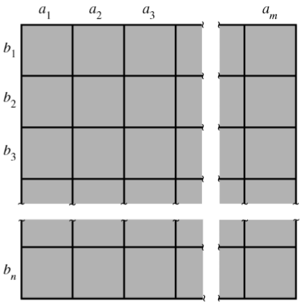

2 Probability and statistics
This chapter is primarily based on Wackerly et al. (2008).
2.1 Probability
2.1.1 Foundations
An experiment is the process by which an observation is made.
A statistical experiment involves the observation of a sample selected from a larger body of data, existing or conceptual, called a population.
When an experiment is performed, it can result in one or more outcomes, which are called events.
A simple event is an event that cannot be decomposed. Because sets are collection of points, we associate a distinct point, called a sample point, with each and every simple event associated with an experiment.
The letter \(E\) with a subscript will be used to denote a simple event or the corresponding sample point.
The sample space associated with an experiment is the set consisting of all possible sample points. A sample space will be denoted by \(S\).
A discrete sample space is one that contains either a finite or a countable number of distinct sample points.
An event in a discrete sample space \(S\) is a collection of sample points—that is, any subset of \(S\).
Suppose \(S\) is a sample space associated with an experiment. To every event \(A\) in \(S\) (\(A\) is a subset of \(S\)), we assign a number, \(P(A)\), called the probability of \(A\), so that the following axioms hold:
Axiom 1: \(P(A) \geq 0\).
Axiom 2: \(P(S)=1\).
Axiom 3: If \(A_1, A_2, A_3, \dots\) form a sequence of pairwise mutually exclusive events in \(S\) (that is, \(A_i \cap A_j = \emptyset\) if \(i \neq j\)), then
\[ P(A_1 \cup A_2 \cup A_3 \cup \dots) = \sum_{i=1}^{\infty} P(A_i). \]
We can easily show that Axiom 3, which is stated in terms of an infinite sequence of events, implies a similar property for a finite sequence.
Specifically, if \(A_1, A_2, \dots, A_n\) are pairwise mutually exclusive events, then \[ P(A_1 \cup A_2 \cup A_3 \cup \cdots \cup A_n) = \sum_{i=1}^{n} P(A_i). \]
If \(A\) is an event, then \[ P(A) = 1-P(\overline{A}). \]
2.1.2 Useful results from the theory of combinatorial analysis
With \(m\) elements \(a_1, a_2, \dots, a_m\) and \(n\) elements \(b_1, b_2, \dots, b_n\), it is possible to form \(mn = m \times n\) pairs containing one element from each group.

The \(mn\) rule can be extended to any number of sets. Given three sets of elements—\(a_1, a_2, \dots, a_m; b_1, b_2, \dots, b_n;\) and \(c_1, c_2, \dots, c_p\)—the number of distinct triplets containing one element from each set is equal to \(mnp\).
An ordered arrangement of \(r\) distinct objects is called a permutation. The number of ways of ordering \(n\) distinct objects taken \(r\) at time will be designated by the symbol \(P^n_r\). In a permutation, the order matters: arranging the same objects in a different order gives a different permutation.
\[ P_r^n = n (n-1) (n-2) \cdots (n-r+1) = \frac{n!}{(n-r)!}. \]
The number of ways of partitioning \(n\) distinct objects into \(k\) distinct groups containing \(n_1, n_2, \dots, n_k\) objects, respectively, where each object appears in exactly one group and \(\sum_{i=1}^k n_i = n\), is
\[ N = \binom{n}{n_1\; n_2\; \cdots\; n_k} = \frac{n!}{n_1! n_2! \cdots n_k!}. \]
The terms \(\binom{n}{n_1\; n_2\; \cdots\; n_k}\) are often called multinomial coefficients because they occur in the expansion of the multinomial term \(y_1 + y_2 + \cdots + y_k\) raised to the \(n\)th power:
\[ (y_1 + y_2 + \cdots + y_k)^n = \sum \binom{n}{n_1\; n_2\; \cdots\; n_k} y_1^{n_1} y_2^{n_2} \cdots y_k^{n_k}, \]
where this sum is taken over all \(n_i = 0, 1, \dots, n\) such that \(n_1, n_2 + \cdots + n_k = n\).
Additional explanation
This sum literally means: go through every possible combination of exponents \(n_1, n_2, \cdots, n_k\) that add up to \(n\), and create one term for each combination.
For example, consider
\[ (y_1+y_2+y_3)^3. \]
The possible exponent combinations \((n_1,n_2,n_3)\) must satisfy
\[ n_1+n_2+n_3=3. \]
So the summation runs over
\[ (3,0,0),\ (0,3,0),\ (0,0,3), \]
\[ (2,1,0),\ (2,0,1),\ (1,2,0),\ (0,2,1),\ (1,0,2),\ (0,1,2), \]
and
\[ (1,1,1). \]
Therefore,
\[ (y_1+y_2+y_3)^3 = \sum_{\substack{n_1+n_2+n_3=3 \\ n_1,n_2,n_3\ge 0}} \binom{3}{n_1\;n_2\;n_3} y_1^{n_1}y_2^{n_2}y_3^{n_3}. \]
Expanding term by term gives
\[ \begin{aligned} (y_1+y_2+y_3)^3 ={}& y_1^3+y_2^3+y_3^3 +3y_1^2y_2+3y_1^2y_3+3y_1y_2^2 \\ &+3y_2^2y_3+3y_1y_3^2+3y_2y_3^2 +6y_1y_2y_3. \end{aligned} \]
The number of combinations of \(n\) objects taken \(r\) at a time is the number of subsets, each of size \(r\), that can be formed from the \(n\) objects. This number will be denoted by \(C_r^n\) or \(\binom{n}{r}\).
\[ C_r^n =\binom{n}{r} = \binom{n}{r \; n-r} = \frac{n!}{r!(n-r)!}. \]
Let \(N\) and \(n\) represent the numbers of elements in the population and sample, respectively. If the sampling is conducted in such a way that each of the \(\binom{N}{n}\) samples has an equal probability of being selected, the sampling is said to be random, and the result is said to be a random sample.
2.1.3 Conditional probability
The conditional probability of an event \(A\), given that an event \(B\) has occurred, is equal to \[ P(A|B) = \frac{P(A \cap B)}{P(B)}, \]
provided \(P(B)>0\).
Two events \(A\) and \(B\) are said to be independent if any one of the following holds:
\[ \begin{aligned} &P(A|B) = P(A), \\ &P(B|A) = P(B), \\ &P(A \cap B) = P(A)P(B). \end{aligned} \]
Otherwise, the events are said to be dependent.
The probability of the union of two events \(A\) and \(B\) is
\[ P(A \cup B) = P(A) + P(B) - P(A \cap B). \]
If \(A\) and \(B\) are mutually exclusive events, \(P(A \cap B) = 0\).
For some positive integer \(k\), let the sets \(B_1, B_2, \dots, B_k\) be such that
- \(S= B_1 \cup B_2 \cup \cdots \cup B_k\).
- \(B_i \cap B_j = \emptyset\), for \(i \neq j\).
Then the collection of sets \(\{B_1, B_2, \dots, B_k\}\) is said to be a partition of \(S\).
Assume that \(\{B_1, B_2, \dots, B_k\}\) is a partition of \(S\) such that \(P(B_i>0)\) for \(i= 1, 2, \dots, k\). Then for any event \(A\)
\[ P(A) = \sum_{i=1}^k P(A|B_i) P(B_i). \]
Bayes’ Rule: \[ P(B_j | A) = \frac{P(A \cap B_j)}{P(A)} = \frac{P(A|B_j)P(B_j)}{\sum_{i=1}^k P(A|B_i) P(B_i)}. \]
2.2 Random variables
A random variable is a function that assigns a real number to each possible outcome of a random experiment.
Mathematically, if \(S\) is the sample space, then a random variable \(Y\) is a function
\[ Y : S \to \mathbb{R}. \]
Thus, for every sample point \(s \in S\), the random variable assigns a value
\[ Y(s) \in \mathbb{R}. \]
2.2.1 Discrete random variables
A random variable \(Y\) is said to be discrete if it can assume only a finite or countably infinite number of distinct values.
Notionally, we will use an uppercase letter, such as \(Y\), to denote a random variable and a lowercase letter, such as \(y\), to denote a particular value that a random variable may assume.
The expression \((Y=y)\) can be read, the set of all points in \(S\) assigned the value \(y\) by the random variable \(Y\).
The probability that \(Y\) takes on the value \(y, P(Y=y)\), is defined as the sum of the probabilities of all sample points in \(S\) that are assigned the value \(y\). We will sometimes denote \(P(Y=y)\) by \(p(y)\), which is called the probability function for \(Y\).
The probability distribution for a discrete variable \(Y\) can be represented by a formula, a table, or a graph that provides \(p(y)=P(Y=y)\) for all \(y\).
For any discrete probability distribution, the following must be true:
- \(0 \leq p(y) \leq 1\) for all \(y\).
- \(\sum_y p(y)=1\), where the summation is over all values of \(y\) with nonzero probability.
The expected value of \(Y\), \(E(Y)\), is defined to be
\[ E(Y) = \sum_y y p(y). \]
Let \(g(Y)\) be a real-valued function of \(Y\). Then the expected value of \(g(Y)\) is given by
\[ E[g(y)] = \sum_y g(y) p(y). \]
If \(Y\) is a r.v. with mean \(E(Y)=\mu\), the variance of \(Y\) is defined to be the expected value of \((Y-\mu)^2\). That is,
\[ V(Y) = E[(Y-\mu)^2] = E(Y^2) - \mu^2. \]
The standard deviation of \(Y\) is the positive square root of \(V(Y)\).
If \(p(y)\) is an accurate characterization of the population frequency distribution, then \(E(Y) = \mu\), \(V(Y) = \sigma^2\), the population variance, and \(\sigma\) is the population standard deviation.
If \(c\) is a constant, then
\[ \begin{aligned} &E[c] = c, \\ &E[cg(Y)] = cE[g(Y)]. \end{aligned} \]
Let \(g_1(Y), g_2(Y), \dots, g_k(Y)\) be \(k\) functions of \(Y\). Then,
\[ E[g_1(Y) + g_2(Y) + \cdots + g_k(Y)] = E[g_1(Y)] + E[g_2(Y)] + \cdots + E[g_k(Y)]. \]
Some exercises
Wackerly 3.19 — An insurance company issues a one-year $1000 policy insuring against an occurrence \(A\) that historically happens to 2 out of every 100 owners of the policy. Administrative fees are $15 per policy and are not part of the company’s profit. How much should the company charge for the policy if it requires that the expected profit per policy be $50 ?
Answer: If \(C\) is the premium for the policy, the company’s profit is \(C-15\) if \(A\) does not occur and \(C-15-1000\) if \(A\) does occur.
\[ E[\text{Profit}] = 0.98(C-15) + 0.02(C-15-1000). \]
\[ 0.98 (C-15) + 0.02 (C-15-1000) = 50 \Leftrightarrow C = 85.\]
Wackerly 3.29 — If \(Y\) is a discrete random variable that assigns positive probabilities to only the positive integers, show that \[ E(Y) = \sum_{k=1}^{\infty} P(Y\geq k) = \sum_{y=1}^{\infty} y p(y). \]
Answer: Notice that for a positive integer \(y\),
\[ y = \sum_{k=1}^y 1. \]
Thus, \[ E(Y) = \sum_{y=1}^{\infty} \left(\sum_{k=1}^y 1\right) P(Y=y). \]
So \[ E(Y) = \sum_{y=1}^{\infty} \sum_{k=1}^y P(Y=y). \]
Now we reverse the order of summation. For a fixed \(k\), the possible \(y\)’s are \(y= k, k+1, k+2, \dots\) because \(k \leq y\).
Hence,
\[ E(Y) = \sum_{k=1}^{\infty} \sum_{y=k}^{\infty} P(Y=y). \]
But,
\[ \sum_{y=k}^{\infty} P(Y=y) = P(Y \geq k). \]
Therefore,
\[ E(Y) = \sum_{k=1}^{\infty} P(Y\geq k). \]
Wackerly 3.33 — Let \(Y\) be a discrete random variable with mean \(\mu\) and variance \(\sigma^2\). If \(a\) and \(b\) are constants, prove that
1 \(E(aY+b) = aE(Y) + b = a\mu + b\).
Answer: Starting from the definition of expectation of a function of a discrete random variable:
\[ E[g(Y)] = \sum_y g(y) p(y). \]
Here, \(g(Y) = aY+b\). Therefore,
\[\begin{aligned} E(aY + b) &= \sum_y (ay+b) p(y) \\ &= \sum_y ay p(y) + \sum_y b p(y) \\ &= a \sum_y y p(y) + b \sum_y p(y). \end{aligned}\]Now, \(\sum_y y p(y) = E(Y) = \mu,\) and because the probabilities of all possible values of \(Y\) sum to 1, \(\sum_y p(y) = 1\).
Therefore,
\[ E(aY+b) = a \mu + b. \]
2 \(V(aY + b) = a^2 V(Y) = a^2 \sigma^2\).
Answer: Recall the definition of variance: \(V(X) = E[(X-E(X))^2]\).
Let \(X=aY+b\). We already know that \(E(X) = a\mu + b\).
Therefore,
\[\begin{aligned} V(aY+b) &= E[((aY+b)-(a\mu+b))^2] \\ &= E[(a(Y-\mu))^2] \\ &= E[a^2 (Y-\mu)^2] \\ &= a^2 E[(Y-\mu)^2] \\ &= a^2 \sigma^2. \end{aligned}\]
2.2.1.1 The Binomial probability distribution
A binomial experiment possesses the following properties:
- The experiment consists of a fixed number, \(n\), of identical trials.
- Each trial results in one of two outcomes: success, \(S\) or failure, \(F\).
- The probability of success on a single trial is equal to some value \(p\) and remains the same from trial to trial. The probability of a failure is equal to \(q=(1-p)\).
- The trials are independent.
- The random variable of interest is \(Y\), the number of successes observed during the \(n\) trials.
A random variable \(Y\) is said to have a binomial distribution based on \(n\) trials with success probability \(p\) if and only if
\[ p(y) = \binom{n}{y} p^y q^{n-y}, \quad y=0,1,2,\dots, n \text{ and } 0\leq p\leq 1. \]
Proof
Each sample point in the sample space can be characterized by an \(n\)-tuple involving the letters \(S\) and \(F\), corresponding to success and failure.
A typical sample point would thus appear as
\[ \underbrace{SSFSFFFSFS\cdots FS}_{n\text{ positions}}, \]
where the letter in the \(i\)th position indicates the outcome of the \(i\)th trial.
Let’s now consider a particular sample point corresponding to \(y\) successes and hence contained in the numerical event \(Y=y\). This sample point,
\[ \underbrace{SSSSS \cdots SSS}_{y} \underbrace{FFF \cdots FF}_{n-y}, \]
represents the intersection of \(n\) independent events (the outcomes of the \(n\) trials), in which there were \(y\) successes followed by \((n-y)\) failures.
Because the trials were independent and the probability of \(S\), \(p\), stays the same from trial to trial, the probability of this sample point is
\[ \underbrace{ppppp \cdots ppp}_{y\text( terms )} \underbrace{qqq \cdots qq}_{n-y \text( terms )} = p^y q^{n-y} \]
Every other sample point in the event \(Y=y\) can be represented as an \(n\)-tuple containing \(y\) \(S\)’s and \((n-y) F\)’s in some order. Any such sample point also has probability \(p^y q^{n-y}\).
Because the number of distinct \(n\)-tuples that contain \(y\) \(S\)’s and \((n-y)\) \(F\)’s is
\[ \binom{n}{y} = \frac{n!}{y!(n-y)!}, \]
it follows that event \((Y=y)\) is made up of \(\binom{n}{y}\) sample points, each with probability \(p^y q^{n-y}\), and that \(p(y) = \binom{n}{y} p^y q^{n-y}, \quad y=0,1,2,\dots, n\).
The term binomial experiment derives from the fact each trial results in one of two possible outcomes and that the probabilities \(p(y), y = 0, 1, 2, \dots, n\), are terms of the binomial expansion:
\[ (q+p)^n = \binom{n}{0} q^n + \binom{n}{1} p^1 q^{n-1} + \binom{n}{2} p^2 q^{n-2} + \cdots + \binom{n}{n} p^n. \]
Example
For example,
\[ (q+p)^4 = \binom{4}{0}q^4 + \binom{4}{1}pq^3 + \binom{4}{2}p^2q^2 + \binom{4}{3}p^3q + \binom{4}{4}p^4. \]
Since
\[ \binom{4}{0}=1,\qquad \binom{4}{1}=4,\qquad \binom{4}{2}=6,\qquad \binom{4}{3}=4,\qquad \binom{4}{4}=1, \]
we obtain
\[ (q+p)^4 = q^4 + 4pq^3 + 6p^2q^2 + 4p^3q + p^4. \]
Binomial probabilities can also be found using R. If \(Y\) has a binomial distribution based on \(n\) trials with success probability \(p\), \(P(Y=y_0) = p(y_0)\) can be found using the command dbinom(y0, n, p), whereas \(P(Y\leq y_0)\) is found by using the command pbinom(y_0, n, p).
Let \(Y\) be a binomial random variable based on \(n\) trials and success probability \(p\). Then
\[ \mu = E(Y) = np \quad \text{ and } \quad \sigma^2 = V(Y) = npq. \]
Some exercises
Wackerly 3.35 — Suppose that there are \(N=5000\) voters in the population, 40% of whom favor Jones. Identify the event favors Jones as a success \(S\). It is evident that the probability of \(S\) on trial 1 is \(0.40\). Consider the event \(B\) that \(S\) occurs on the second trial. Then \(B\) can occur in two ways: The first two trials are both successes or the first trial is a failure and the second is a success. Show that \(P(B)= 0.4.\) What is \(P(B |\text{ the first trial is } S)?\) Does this conditional probability differ markedly from \(P(B)\)?
Answer: There are \(0.4(5000)=2000\) voters who favor Jones, while 3000 do not. Let \(S_1\): first voter favors Jones, and \(B=S_2\): second voter favors Jones.
The second voter can favor Jones in exactly two mutually exclusive ways:
\[ (S_1 \cap S_2) \quad \text{ or } \quad (\overline{S_1} \cap S_2). \]
Therefore, \[ P(B) = P(S_1 \cap S_2) + P(\overline{S_1} \cap S_2). \]
For the first path,
\[ P(S_1) = \frac{2000}{5000}, \]
and after selecting a Jones supporter first, 1999 Jones supporters remain among 4999 voters:
\[ P(S_2 | S_1) = \frac{1999}{4999}. \]
Hence,
\[ P(S_1 \cap S_2) = P(S_2 | S_1 ) P(S_1) = \frac{1999}{4999} \frac{2000}{5000}. \]
For the second path,
\[ P(\overline{S_1}) = \frac{3000}{5000} \text{ and } P(S_2 | \overline{S_1} ) = \frac{2000}{4999}. \]
Hence,
\[ P(\overline{S_1} \cap S_2) = \frac{2000}{4999} \frac{3000}{5000}. \]
Putting everything together,
\[ P(B) = \frac{1999}{4999} \frac{2000}{5000}+ \frac{2000}{4999} \frac{3000}{5000} = 0.4. \]
So although the first voter is removed, the unconditional probability that the second voter favors Jones is still 0.4.
Now the exercise asks for \(P(B|S_1)\), which we calculated as \(\frac{1999}{4999} \approx 0.39988\).
The difference is only about 0.00012 so it is not markedly different. The important conceptual point is that the trials are not exactly independent, because \(P(B|S_1) \neq P(B)\). But because the population is very large relative to one draw, the dependence is negligible. This is why sampling without replacement from a very large population can be treated as approximately binomial.
Wackerly 3.36(a) — A meteorologist in Denver recorded \(Y\) = the number of days of rain during a 30-day period. Does \(Y\) have a binomial distribution ? If so, are the values of both \(n\) and \(p\) given?
Answer: Not necessarily binomial because consecutive days are often related.
Wackerly 3.36(b) — A market research firm has hired operators who conduct telephone surveys. A computer is used to randomly dial a telephone number, and the operator asks the answering person whether she has time to answer some questions. Let $Y = $ the number of calls made until the first person replies that she is willing to answer the questions. Is this a binomial experiment? Explain.
Answer: No because the number of trials \(n\) must be fixed in advance.
Wackerly 3.48 — A missile protection system consists of \(n\) radar sets operating independently, each with a probability of 0.9 of detecting a missile entering a zone that is covered by all of the units.
If \(n\) = 5 and a missile enters the zone, what is the probability that exactly four sets detect the missile? At least one set?
Answer: Let $Y = $number of radar sets that detect the missile. Since the radar sets operate independently and each detects the missile with probability \(p=0.9\), we have \(Y \sim \operatorname{Bin}(n, 0.9)\).
For exactly four sets detecting the missile: \[ P(Y=4) = \binom{5}{4} (0.9)^4 (0.1)^1 = 0.32805. \]
For at least one set detecting the missile, it is easier to use the complement:
\[ P(Y \geq 1) = 1 - P(Y=0) = 1 - (0.1)^5 = 0.99999. \]
How large must be \(n\) if we require that the probability of detecting a missile that enters the zone be 0.999?
Answer: \[ P(Y) \geq 0.999 \Leftrightarrow 1-(0.1)^{n\,} \geq 0.999 \Leftrightarrow n \geq 3. \]
Indeed, \[ P(\text{at least one detection}) = 1-(0.1)^3 = 1-0.001 = 0.999. \]
Wackerly 3.58 — A particular sale involves four items randomly selected from a large lot that is known to contain 10% defectives. Let \(Y\) denote the number of defectives among the four sold. The purchase of the items will return the defectives for repair, and the repair cost is given by \(C = 3Y^2 + Y + 2\). Find the expected repair cost.
Answer: With \(Y \sim \operatorname{Bin}(4, 0.1)\), we want \(E(C) = 3Y^2 + Y + 2 = E(C) = 3E(Y^2) + E(Y) + 2.\)
Since \(E(Y) = np = 0.4\), and \(E(Y^2) = \sigma^2 + \mu^2 = npq + (np)^2 = 0.52,\)
\[ E(C) = 3 (0.52) + 0.4 + 2 = 3.96\$. \]
2.2.1.2 The Geometric probability distribution
The random variable with the geometric probability distribution is associated with an experiment involving identical and independent trials, each of which can result in one of two outcomes: success or failure. The probability of success is equal to \(p\) and is constant from trial to trial. However, instead of the number of successes that occur in \(n\) trials, the geometric r.v. \(Y\) is the number of the trial on which the first success occurs.
A random variable \(Y\) is said to have a geometric probability distribution if and only if
\[ p(y) = q^{y-1} p, \qquad y=1, 2, 3, \dots, \quad 0 \leq p \leq 1. \]
This distribution is often used to model distributions of lengths of waiting times. For example, suppose that a commercial aircraft engine is serviced periodically so that its various parts are replaced at different points in time and hence are of varying ages. Then the probability of engine malfunction, \(p\), during any randomly observed one-hour interval of operation might be the same as for any other one-hour interval. (If the entire engine simply aged continuously without maintenance, we might expect \(P\)(failure in next hour) to increase as the engine gets older). The length of time prior to engine malfunction is the number of one-hour intervals, \(Y\), until the first malfunction.
If \(Y\) is a rv with a geometric distribution,
\[ \mu = E(Y) = \frac{1}{p} \quad \text{ and } \quad \sigma^2=V(Y)=\frac{1-p}{p^2}. \]
\(P(Y=y_0)=p(y_0)\) can be found using the R command dgeom(y0-1, p) whereas \(P(Y<=y_0)\) is found by using the R command pgeom(y0-1,p).
Note that the argument in these commands is the value \(y_0-1\), not the value \(y_0\), because some authors prefer to define the geometric distribution to be that of the random variable \(Y^*=\) the number of failures before the first success.
Some exercises
Wackerly 3.70 — An oil prospector will drill a succession of holes in a given area to find a productive well. The probability that he is successful on a given trial is .2.
- What is the probability that the third hole drilled is the first to yield a productive well?
Answer: \[ p(3) = 0.8^2 0.2 = 0.128. \]
- If the prospector can afford to drill at most ten wells, what is the probability that he will fail to find a productive well?
Answer: \[ 0.8^{10} = 0.1074. \]
Wackerly 3.71 — Let \(Y\) denote a geometric rv with probability of success \(p\). Show that for positive integers \(a\) and \(b\), \[ P(Y>a + b | Y>a) = q^b = P(Y>b). \]
Answer: \[ P(Y>a+b|Y>a) = \frac{P(Y>a+b)}{P(Y>a)} = \frac{q^{a+b}}{q^a} = q^b. \]
This result implies that, for example, \(P(Y>7|Y>2) = P(Y>5)\). This property is called the memoryless property of the geometric distribution. Past failures do not affect the distribution of the remaining waiting time.
Wackerly 3.88 — If \(Y\) is a geometric rv, define \(Y^* = Y-1\). If \(Y\) is interpreted as the number of the trial on which the first success occurs, then \(Y^*\) can be interpreted as the number of failures before the first success. If \(Y^* = Y-1, P(Y^*=y) = P(Y-1=y) = P(Y=y+1)\) for \(y=0, 1, 2, \dots.\) Show that \[ P(Y^* = y) = q^y p, \quad y=0, 1, 2, \dots . \]
Answer: Using the ordinary geometric probability distribution, \(P(Y=k)=q^{k-1}p.\)
Here \(k=y+1\), so \[ P(Y=y+1) = q^{(y+1)-1}p = q^y p.\]
Therefore, \[ P(Y^* = y) = q^yp, \quad y=0,1,2,\dots . \]
The probability distribution of \(Y^*\) could sometimes be used by actuaries as a model for the distribution of the number of insurance claims made in a specific time period.
Suppose \(N\)= number of insurance claims made by a policyholder during one year. Possible values are naturally \(N=0,1,2,3,\dots.\), just like \(Y^*\). An actuary could therefore model \(N \sim \operatorname{Geom}_0(p).\)
2.2.1.3 The Negative Binomial probability distribution
Again we focus on independent and identical trials, each of which results in one of two outcomes: success or failure. The probability \(p\) of success stays the same from trial to trial.
The geometric distribution handles the case where we are interested in the number of the trial on which the first success occurs. What if we are interested in knowing the number of the trial on which the second, third, or fourth success occurs?
The distribution that applies to the random variable \(Y\) equal to the number of the trial on which the \(r\)th success occurs (\(r=2,3, 4\) etc.) is the negative binomial distribution.
A random variable \(Y\) is said to have a negative binomial probability distribution if and only if
\[ p(y) = \binom{y-1}{r-1} p^r q^{y-r}, \qquad y=r, r+1, r+2, \dots, \quad 0 \leq p \leq 1. \]
Proof
Let us select fixed values for \(r\) and \(y\) and consider events \(A\) and \(B\), where \[ A = \{ \text{the first } (y-1) \text{ trials contain } (r-1) \text{ successes} \} \]
and
\[ B = \{ \text{trial } y \text{ results in a success} \}. \]
Because w assume that the trials are independent, it follows that \(A\) and \(B\) are independent events, and previous assumptions imply that \(P(B)=p\).
Therefore,
\[ p(y) = p(Y=y) = P(A \cap B) = P(A) \times P(B). \]
Notice that \(P(A)\) is 0 if \(y < r\). If \(y \geq r\), our previous work with the binomial distribution implies that
\[ P(A) = \binom{y-1}{r-1} p^{r-1} q^{y-r}. \]
Finally,
\[ P(A) \times P(B) = p(y) = \binom{y-1}{r-1} p^{r} q^{y-r}, \qquad y=r, r+1, r+2, \dots . \]
If \(r= 2, 3, 4, \dots\) and \(Y\) has a negative binomial distribution with success probability \(p\), \(P(Y=y_0) = p(y_0)\) can be found by using the R command dnbinom(y0-r, r, p). If we wanted to use R to obtain the probability of obtaining the third success on the fifth trial, \(p(5)\), we use the command dnbinom(2, 3, 0.2), if the success probability of a single trial is 0.2.
Alternatively, \(P(Y\leq y_0)\) is found by using the R command pbinom(y0-r, r, p).
Note that the first argument in these commands is the value \(y_0-r\). This is because some authors prefer to define the negative binomial distribution to be that of the random variable \(Y^* =\) the number of failures before the \(r\)th success.
If \(Y\) is a rv with a negative binomial distribution,
\[ \mu=E(Y)=\frac{r}{p} \quad \text{ and } \quad \sigma^2=V(Y)=\frac{r(1-p)}{p^2}. \]
Some exercises
Wackerly 3.96 — The telephone lines serving an airline reservation office are all busy about 60% of the time.
- If we are calling this office, what is the probability that we will complete our call on the third try?
Answer: Here, a call is a success if we get through; \(p= P(S)=0.4\).
For the third try to be the first successful one, the sequence must be \(FFS\).
This is geometric because we’re waiting for the first success.
Therefore, \[ P(Y=3) = q^2p = 0.6^2 0.4 = 0.144. \]
- If us and a friend must both complete calls to this office, what is the probability that a total of four tries will be necessary for both of us to get through.
Answer: Using the negative binomial formula with \(r=2\) and \(y=4\),
\[ P(Y=4) = \binom{4-1}{2-1} p^2 q^{4-2} = 0.1728. \]
Wackerly 3.97 — A geological study indicates that an exploratory oil well should strike oil with probability 0.2.
- What is the probability that the first strike comes on the third well drilled?
Answer: \[ P(Y=3) = q^2 p = 0.8^2 0.2 = 0.128. \]
- What is the probability that the third strike comes on the seventh well drilled?
Answer: \[ P(Y=7) = \binom{6}{2} 0.2^3 0.8^4 \approx 0.0492. \]
- What assumptions are necessary to obtain the answers to parts 1 and 2?
Answer: each well has only two relevant outcomes: oil strike or no oil strike; each drilling has the same probability of success: \(P(S)=0.2\); and the drillings are independent. So essentially, independent, identical Bernoulli trials with constant \(p=0.2\).
- Find the mean and variance of the number of wells that must be drilled if the company wants to set up three producing wells.
Answer: Let \(Y =\) number of wells drilled until the third strike.
Then, \(Y \sim \operatorname{NegBin}(r= 3, p= 0.2).\)
For a negative binomial rv, \[ E(Y) = \frac{r}{p} = \frac{3}{0.2} = 15. \]
So the company should expect to drill 15 wells to obtain three producing wells.
The variance is
\[ V(Y) = \frac{rq}{p^2} = \frac{3(0.8)}{0.2^2} = 60. \]
2.2.1.4 The Hypergeometric probability distribution
Suppose that a population contains a finite number \(N\) of elements that possesses one of two characteristics.
Thus, \(r\) of the elements might be red and \(b= N-r\), black. A sample of \(n\) elements is randomly selected from the population, and the random variable of interest is \(Y\), the number of red elements in the sample. This rv has what is known as the hypergeometric probability distribution.
A random variable \(Y\) is said to have a hypergeometric probability distribution if and only if
\[ p(y) = \frac{\binom{r}{y} \binom{N-r}{n-y}}{\binom{N}{n}}, \]
where \(y\) is an integer \(0, 1, 2, \dots, n\), subject to the restrictions \(y \leq r\) and \(n-y \leq N-r\).
Suppose that a population of size \(N\) consists of \(r\) units with the attribute and \(N-r\) without. If a sample of size \(n\) is taken, without replacement, and \(Y\) is the number of items with the attribute in the sample, \(P(Y=y_0) = p(y_0)\) can be found by using the R command dhyper(y0, r, N-r, n). Alternatively, \(P(Y \leq y_0)\) is found by using the R command phyper(y0, r, N-r, n).
If \(Y\) is a random variable with a hypergeometric distribution,
\[ \mu = E(Y) = \frac{nr}{N} \quad \text{ and } \quad \sigma^2 = V(Y) = n \left( \frac{r}{N} \right) \left( \frac{N-r}{N} \right) \left( \frac{N-n}{N-1} \right). \]
Although the mean and the variance of the hypergeometric random variable seem to be complicated, they bear a striking resemblance to the mean and variance of a binomial rv. Indeed, if we define \(p=\frac{r}{N}\) and \(q=1-p=\frac{N-r}{N}\), we can re-express the mean and variance of the hypergeometric as \(\mu=np\) and
\[ \sigma^2 = npq \left( \frac{N-n}{N-1} \right). \]
We can view the factor \(\frac{N-n}{N-1}\) in \(V(Y)\) as an adjustment that is appropriate when \(n\) is large relative to \(N\).
For fixed \(n\), as \(N \rightarrow \infty\),
\[ \frac{N-n}{N-1} \rightarrow 1. \]
The hypergeometric probability function converges to the binomial probability function as \(N\) becomes large:
\[ \lim_{N \to \infty} \frac{ \binom{r}{y} \binom{N-r}{n-y} }{ \binom{N}{n} } = \binom{n}{y} p^y(1-p)^{n-y}. \]
where \(\frac{r}{N} = p.\)
Some exercises
Wackerly 3.105 — A group of eight candidates for three local teaching positions consisted of five who had enrolled in paid internships and three who enrolled in traditional student teaching programs. All eight candidates appear to be equally qualified, so three are randomly selected to fill the open positions. Let \(Y\) be the number of internship trained candidates who are hired.
- Does \(Y\) have a binomial or hypergeometric distribution? Why ?
Answer: It is hypergeometric because the candidates are selected without replacement from a finite population. Once somebody is hired, they cannot be selected again, so the successive selections are not independent.
Thus, \[ Y \sim \operatorname{Hypergeometric} (N=8, r=5, n=3). \]
The probability distribution is
\[ P(Y=y) = \frac{\binom{5}{y} \binom{3}{3-y}}{\binom{8}{3}}. \]
- Find the probability that two or more internship trained candidates are hired.
Answer: We want \(P(Y \geq 2) = P(Y=2) + P(Y=3)\) since only 3 people are hired.
For exactly 2 internship-trained candidates:
\[P(Y=2) = \frac{\binom{5}{2} \binom{3}{1}}{\binom{8}{3}} = \frac{30}{56}. \]
For exactly 3 intership-trained candidates:
\[P(Y=2) = \frac{\binom{5}{3} \binom{3}{0}}{\binom{8}{3}} = \frac{10}{56}. \]
Hence,
\[ P(Y \geq 2) = \frac{40}{56} = \frac{5}{7} \approx 0.7143. \]
- What are the mean and standard deviation of \(Y\)?
Answer: Using \(E(Y) = \frac{nr}{N}\), we obtain \[ \frac{15}{8} = 1.875. \]
For the variance, \(V(Y)\) gives us \(\frac{225}{448}\). The standard deviation is
\[ \sigma = \sqrt{V(Y)} = \sqrt{\frac{225}{448}} \approx 0.7087. \]
Wackerly 3.108 — A shipment of 20 cameras includes 3 that are defective. What is the minimum number of cameras that must be selected if we require that \(P(\text{at least }1\text{ defective}) \geq 0.8\)?
Answer: We need \(1-P(Y=0) \geq 0.8\), or equivalently \(P(Y=0) \leq 0.2.\)
If \(Y\) is the number of defectives selected, then
\[ P(Y=0) = \frac{\binom{3}{0} \binom{17}{n}}{\binom{20}{n}} = \frac{\binom{17}{n}}{\binom{20}{n}}. \]
Now, we have to test increasing values of \(n\).
For \(n=7\),
\[ P(Y=0) = \frac{\binom{17}{7}}{\binom{20}{7}} \approx 0.2509, \]
so
\[ P(Y \geq 1) = 1 - 0.2509 = 0.7491 < 0.8, \]
which is not enough.
But for \(n=8\),
\[ P(Y=0) = \frac{\binom{17}{8}}{\binom{20}{8}} \approx 0.1930. \]
Therefore,
\[ P(Y \geq 1) = 1 - 0.19309 = 0.8070 > 0.8. \]
Since \(n=7\) fails but \(n=8\) works, the minimum is \(n=8\).
Wackerly 3.119 — Cards are dealt at random and without replacement from a standard 52 card deck. What is the probability that the second king is dealt on the fifth card?
Answer: For the second king to be dealt on the fifth card, two things must happen; exactly 1 king among cards 1-4 and then card 5 must be a king.
First, the probability of exactly one king among the first four cards is hypergeometric:
\[ P(\text{1 king in first 4}) = \frac{\binom{4}{1} \binom{48}{3}}{\binom{52}{4}}. \]
If exactly one king appeared in those first four cards, then there are 48 cards remaining, including 3 kings. Therefore,
\[ P(\text{5th card is king }|\text{ 1 king in first 4}) = \frac{3}{48}. \]
If we multiply both results, we obtain \[ P(\text{second king on card 5}) = \frac{\binom{4}{1} \binom{48}{3}}{\binom{52}{4}} \frac{3}{48} \approx 0.01597. \]
Wackerly 3.120 — The sizes of animal populations are often estimated by using a capture-tag-recapture method. In this method \(k\) animals are captured, tagged, and then released into the population. Some time later \(n\) animals are captured, and \(Y\), the number of tagged animals among the \(n\), is noted. The probabilities associated with \(Y\) are a function of \(N\), the number of animals in the population, so the observed value of \(Y\) contains information on this unknown \(N\). Suppose that \(k=4\) animals are tagged and then released. A sample of \(n=3\) animals is then selected at random from the same population. Find \(P(Y=1)\) as a function of \(N\). What value of \(N\) will maximize \(P(Y=1)\)?
Answer: Because we sample from a finite population without replacement, \(Y\) is hypergeometric.
There are 4 tagged animals and \(N-4\) untagged animals.
Therefore, \[ P(Y=1) = \frac{\binom{4}{1}\binom{N-4}{2}}{\binom{N}{3}}. \]
Maximizing for \(N\) gives \(N=11\) or \(N=12\).
2.2.1.5 The Poisson probability distribution
Suppose that we want to find the probability distribution of the number of automobile accidents at a particular intersection during a time period of one week. At first glance this rv, the number of accidents, may not seem even remotely related to a binomial rv, but there exists an interesting relationship.
If we think of the time period, one week in this example, as being split up into \(n\) subintervals, each of which is so small that at most one accident could occur in it with probability different from zero.
Denoting the probability of accident in any subinterval by \(p\), we have, for all practical purposes,
\[ \begin{aligned} P(\text{no accidents occur in a subinterval}) &= 1-p, \\ P(\text{one accident occurs in a subinterval}) &= p, \\ P(\text{more than one accident occurs in a subinterval}) &= 0. \end{aligned} \]
Then the total number of accidents in the week is just the total number of subintervals that contain one accident. If the occurrence of accidents can be regarded as independent from interval to interval, the total number of accidents has a binomial distribution.
It seems reasonable that as we divide the week into a greater number \(n\) of subintervals, the probability \(p\) of one accident in one of these shorter subintervals will decrease. Letting \(\lambda=np\) and taking the limit of the binomial probability \(p(y) = \binom{n}{y} p^y (1-p)^{n-y}\) as \(n \rightarrow \infty\), we have
\[ \begin{aligned} \lim_{n \to \infty} \binom{n}{y} p^y (1-p)^{n-y} &= \lim_{n \to \infty} \frac{n(n-1)\cdots(n-y+1)}{y!} \left(\frac{\lambda}{n}\right)^y \left(1-\frac{\lambda}{n}\right)^{n-y} \\[0.5em] &= \lim_{n \to \infty} \frac{\lambda^y}{y!} \left(1-\frac{\lambda}{n}\right)^n \frac{n(n-1)\cdots(n-y+1)}{n^y} \left(1-\frac{\lambda}{n}\right)^{-y} \\[0.5em] &= \frac{\lambda^y}{y!} \lim_{n \to \infty} \left(1-\frac{\lambda}{n}\right)^n \left(1-\frac{\lambda}{n}\right)^{-y} \left(1-\frac{1}{n}\right) \\ &\qquad\times \left(1-\frac{2}{n}\right) \times\cdots\times \left(1-\frac{y-1}{n}\right). \end{aligned} \]
Noting that \[ \lim_{n \rightarrow \infty} \left(1- \frac{\lambda}{n}\right)^n = e^{-\lambda}, \] and all other terms to the right of the limit have a limit 1, we obtain \[ p(y) = \frac{\lambda^y}{y!} e^{-\lambda}. \]
Rv’s possessing this distribution are said to have a Poisson distribution.
Because the binomial probability function converges to the Poisson, the Poisson probabilities can be used to approximate their binomial counterparts for large \(n\), small \(p\), and \(\lambda=np\) less than, roughly, 7.
The Poisson probability distribution often provides a good model for the probability distribution of the number \(Y\) of rare events that occur in space, time, volume, or any other dimension, where \(\lambda\) is the average value of \(Y\).
A random variable \(Y\) is said to have a Poisson probability distribution if and only If
\[ p(y) = \frac{\lambda^y}{y!} e^{-\lambda}, \qquad y=0,1,2, \dots, \quad \lambda >0. \]
If \(Y\) has a Poisson distribution with mean \(\lambda\), \(P(Y=y_0)=p(y_0)\) can be found by using the R command dpois(y0,λ). Alternatively, \(P(Y \leq y_0)\) is found by using the R command ppois(y0,λ).
If \(Y\) is a random variable possessing a Poisson distribution with parameter \(\lambda\), then
\[ \mu=E(Y)=\lambda \quad \text{ and } \quad \sigma^2 = V(Y)=\lambda. \]
A common way to encounter a rv with a Poisson distribution is through a model called a Poisson process, which models events occurring randomly over time, length, area, or another continuous domain.
If events occur at a constant average rate \(\lambda\) per unit, then the number of occurrences \(Y\) observed over \(a\) units follows a Poisson distribution with mean \(a\lambda\):
\[ Y \sim \operatorname{Poisson}(a\lambda). \]
For example, if events occur on average at a rate of \(\lambda=3\) per hour, then the number observed during two hours has mean \(2\lambda=6\).
A key assumption of a Poisson process is that counts in disjoint intervals are independent. Thus, the number of events occurring in one interval does not affect the number occurring in a separate, non-overlapping interval.
Some exercises
Wackerly 3.124 — Approximately 4% of silicon wafers produced by a manufacturer have fewer than two large flaws. If \(Y\), the number of flaws per wafer, has a Poisson distribution, what proportion of the wafers have more than five large flaws?
Answer: We are told that 4% of wafers have fewer than two flaws:
\[ P(Y<2) = 0.04. \]
Since \(Y\) is discrete,
\[ P(Y<2) = P(Y=0) + P(Y=1). \]
For a Poisson rv,
\[ P(Y=y) = \frac{\lambda^y e^{-\lambda}}{y!}. \]
Therefore, \[ P(Y=0) = e^{-\lambda} \text{ and } P(Y=1)=\lambda e^{-\lambda}. \]
Hence,
\[ e^{-\lambda} + \lambda e^{-\lambda} = 0.04, \]
where solving for \(\lambda\) gives \(\lambda \approx 5.013\).
Now the question asks for the proportion having more than five flaws, \(P(Y>5)\).
We can use the complement:
\[ P(Y>5) = 1 - P(Y \leq 5) = 1 - \sum_{y=0}^{5} \frac{\lambda^y e^{-\lambda}}{y!}. \]
Using our \(\lambda \approx 5.013\),
\[ P(Y \leq 5) \approx 0.6137. \]
Therefore,
\[ P(Y>5) \approx 1-0.6137 = 0.3863. \]
Wackerly 3.126 — Assume that arrivals occur according to a Poisson process with an average of seven per hour. What is the probability that exactly two customers arrive in the two-hour period of time between
- 2:00 PM and 4:00 PM (one continuous two-hour period)?
Answer: For a Poisson process, over \(t\) hours,
\[ N(t) \sim \operatorname{Poisson}(7t). \]
The exposure is 2 hours, so \(\lambda^* = 7 \times 2 = 14.\)
Thus, \(N \sim \operatorname{Poisson}(14).\)
We want exactly two customers:
\[ P(N=2) = \frac{14^2 e^{-14}}{2!} \approx 0.0000815. \]
- 1:00 PM and 2:00 PM or between 3:00 PM and 4:00 PM (two separate one-hour periods that total two hours)?
Answer: Because the process is homogeneous, the arrival rate is constant over time. Therefore, only the total length of the observed intervals matters.
The two separate one-hour intervals are disjoint and together represent 2 hours of observation, so the total numbers of arrivals has also \(\lambda=14\).
Thus, part (b) has the same distribution as part (a) and therefore the probability of exactly two arrivals is the same.
Wackerly 3.128 & 3.129 — Cars arrive at a toll both according to a Poisson process with mean 80 cars per hour.
- If the attendant makes a one-minute phone call, what is the probability that at least 1 car arrives during the call?
Answer: \(\lambda = 80\) cars/hour, and thus \(\lambda=\frac{80}{60} = \frac{4}{3}\) cars/minute.
For a one-minute call, \[ Y \sim \operatorname{Poisson}\left(\frac{4}{3}\right). \]
We want \(P(Y \geq 1) = 1 - P(Y = 0).\)
For a Poisson rv,
\[ P(Y=0) = e^{-\lambda}. \]
Therefore,
\[ P(Y \geq 1) = 1 - e^{-\frac{4}{3}} \approx 0.7364. \]
- How long can the attendant’s phone call last if the probability is at least 0.4 that no cars arrive during the call?
Answer: Let \(t\) be the length of the call in minutes. During \(t\) minutes, the Poisson mean is \(\frac{4}{3} t.\)
Thus,
\[ P(\text{no cars during the call}) = P(Y=0) = e^{-\frac{4}{3} t}. \]
We require this probability to be at least 0.4:
\[ e^{-\frac{4}{3} t} \geq 0.4 \Leftrightarrow t \leq 0.6872 \approx 41.2 \text{ seconds.} \]
Wackerly 3.130 — A parking lot has two entrances. Cars arrive at entrance I according to a Poisson distribution at an average of 3/hour and at entrance II according to a Poisson distribution at an average of 4/hour. What is the probability that a total of three cars will arrive at the parking lot in a given hour?
Answer: We assume that the numbers of cars arriving at the two entrances are independent.
Let \(X=\) number of cars arriving at entrance I and \(Y=\) number of cars arriving at entrance II. We have \(X \sim \operatorname{Poisson}(3)\) and \(Y \sim \operatorname{Poisson}(4)\).
Because the two counts are independent, the total \(T=X+Y\) is also Poisson, with parameter equal to the sum:
\[ T \sim \operatorname{Poisson}(3+4) = \operatorname{Poisson}(7). \]
We want exactly 3 cars:
\[ P(T=3) = \frac{7^3 e^{-7}}{3!} \approx 0.0521. \]
The key property here is:
\[ X \sim \operatorname{Pois}(\lambda_1), \; Y \sim \operatorname{Pois}(\lambda_2), \quad X \perp Y \;\Rightarrow\; X + Y \sim \operatorname{Pois}(\lambda_1 + \lambda_2). \]
This is the superposition property of independent Poisson variables.
Wackerly 3.134 — Consider a binomial experiment for \(n=20\), \(p=0.05\). Calculate the binomial probabilities for \(Y=0, 1, 2, 3 \text{ and } 4\). Calculate the same probabilities by using the Poisson approximation with \(\lambda=np\).
Answer: Here, \(Y \sim \operatorname{Bin}(n=20, p=0.05).\)
For the binomial distribution,
\[ P(Y=y) = \binom{20}{y} (0.05)^y (0.95)^{20-y}. \]
For the Poisson approximation, \(\lambda = np = 20(0.05) = 1 \Leftrightarrow W \sim \operatorname{Poisson}(1).\)
Then, \[ P(W=y) = \frac{e^{-1}}{y!}. \]
\(y\) Exact binomial Poisson approximation 0 0.35849 0.36788 1 0.37735 0.36788 2 0.18868 0.18394 3 0.05958 0.06131 4 0.01333 0.01533 So the approximation is quite close for all these values. The reason is that \(n=20\) is reasonably large and \(p=0.05\) is small, while \(np=1\).
Therefore, \(\operatorname{Bin}(20, 0.05) \approx \operatorname{Pois}(1)\) works fairly here.
Wackerly 3.138 — Let \(Y\) have a Poisson distribution with mean \(\lambda\). Show that \(V(Y)=\lambda\).
Answer: We have \[ P(Y=y) = \frac{\lambda^y e^{-\lambda}}{y!}, \qquad y=0,1, 2, \dots . \]
We already know \(E(Y)=\lambda.\)
We have \[ E[Y(Y-1)] = \sum_{y=0}^{\infty} y(y-1)\frac{\lambda^y e^{-\lambda}}{y!}. \]
The terms for \(y=0\) and \(y=1\) are zero, so \[ E[Y(Y-1)] = \sum_{y=2}^{\infty} y(y-1)\frac{\lambda^y e^{-\lambda}}{y!}. \]
Now we use $y! = y(y-1)(y-2)!,
so \[ \frac{y(y-1)}{y!} = \frac{1}{(y-2)!} \].
Therefore, \[ E[Y(Y-1)] = e^{-\lambda} \sum_{y=2}^{\infty} \frac{\lambda^y}{(y-2)!}. \]
If we factor out \(\lambda^2\): \[ E[Y(Y-1)] = \lambda^2 e^{-\lambda} \sum_{y=2}^{\infty} \frac{\lambda^{y-2}}{(y-2)!}. \]
Set \(k=y-2\). Then \[ E[Y(Y-1)] = \lambda^2 e^{-\lambda} \sum_{k=0}^{\infty} \frac{\lambda^{k}}{(k)!}. \]
But, see Section 1.1,
\[ \sum_{k=0}^{\infty} \frac{\lambda^{k}}{(k)!} = e^{\lambda}. \]
Hence, \[ E[Y(Y-1)] = \lambda^2. \]
Now we use \(Y^2 = Y(Y-1) + Y\).
Taking expectations, \(E(Y^2) = E[Y(Y-1)] + E(Y).\)
Thus, \(E(Y^2) = \lambda^2 + \lambda.\)
Finally, \[ V(Y) = E(Y^2) - [E(Y)]^2 = (\lambda^2 + \lambda) - \lambda^2 = \lambda. \]
Therefore, for a Poisson rv, \(E(Y) = V(Y) = \lambda\).
Wackerly 3.142 — Let \(p(y)\) denote the probability function associated with a Poisson rv with mean \(\lambda\).
Show that the ratio of successive probabilities satisfies \(\frac{p(y)}{p(y-1)} = \frac{\lambda}{y}\), for \(y=1, 2, \dots .\)
Answer: We divide both probabilities:
\[ \begin{aligned} \frac{p(y)}{p(y-1)} &= \frac{\frac{\lambda^y e^{-\lambda}}{y!}}{\frac{\lambda^{y-1}e^{-\lambda}}{(y-1)!}} \\ &= \frac{\lambda^y e^{-\lambda}}{y!} \frac{(y-1)!}{\lambda^{y-1}e^{-\lambda}} \\ &= \frac{\lambda}{y}. \end{aligned} \]
For which values of \(y\) is \(p(y) > p(y-1)\)?
Answer: \(p(y) > p(y-1)\) exactly when \[ \frac{p(y)}{p(y-1)} > 1. \] Thus, \(\frac{\lambda}{y} > 1.\) So, \(y<\lambda\).
Therefore, \[ p(y) > p(y-1) \text{ when } y < \lambda. \]
So the Poisson probabilities increase while \(y<\lambda\) and decrease once \(y>\lambda\).
Show that \(p(y)\) is maximized when \(y =\) the greatest integer less than or equal to \(\lambda\).
Answer: From \(\frac{p(y)}{p(y-1)} = \frac{\lambda}{y}\), we can directly compare two successive Poisson probabilities.
If \(y<\lambda\), then \(\frac{\lambda}{y} > 1\), so \(p(y)>p(y-1)\).
If \(y>\lambda\), then \(\frac{\lambda}{y} < 1\), so \(p(y)<p(y-1)\).
Therefore the probabilities increase while \(y<\lambda\), then decrease once \(y>\lambda\).
Hence the maximum occurs around \(\lambda\), specifically at
\[ y= \lfloor \lambda \rfloor. \]
Why? Suppose \(\lambda\) is not an integer.
Let \(m = \lfloor \lambda \rfloor.\) By definition of the floor, \(m < \lambda < m+1\). Therefore,
\[ \frac{p(m)}{p(m-1)} = \frac{\lambda}{m} > 1, \]
so \(p(m) > p(m-1)\).
But for the next integer,
\[ \frac{p(m+1)}{p(m)} = \frac{\lambda}{m+1} < 1, \]
so \(p(m+1) < p(m)\).
Thus \(p(m)\) is where the probabilities stop increasing and start decreasing. Hence
\[ \operatorname{mode}(Y) = \lfloor \lambda \rfloor. \]
If \(\lambda\) is an integer, say \(\lambda = m\), then
\[ \frac{p(m)}{p(m-1)} = \frac{m}{m} = 1. \]
Hence \[ p(m) = p(m-1). \]
Before that point the probabilities are increasing, and after it they are decreasing, so these two equal probabilities are both maximal:
\[ \operatorname{modes}(Y) = \lambda - 1 \text{ and } \lambda. \]
2.2.1.6 Moments and moment-generating functions
The parameters \(\mu\) and \(\sigma\) are meaningful numerical descriptive measures that locate the center and describe the spread associated with the values of a rv \(Y\). They do not, however, provide a unique characterization of the distribution of \(Y\). Many different distributions possess the same means and standard deviations.
The \(k\)th moment of a random variable \(Y\) taken about the origin is defined to be \(E\left(Y^k\right)\) and is denoted by \(\mu'_k\).
Notice in particular that the first moment about the origin is \(E(Y)=\mu'_1=\mu\) and \(\mu'_2=E(Y^2)\) is employed for finding \(\sigma^2\).
The \(k\)th moment of a random variable taken about its mean, or the \(k\)th central moment of \(Y\), is defined to be \(E[(Y-\mu)^k]\) and is denoted by \(\mu_k\).
In particular, \(\sigma^2 = \mu_2\).
The moment-generating function \(m(t)\) for a random variable \(Y\) is defined to be \(m(t) = E(e^{tY}).\) We say that a moment-generating function for \(Y\) exists if there exists a positive constant \(b\) such that \(m(t)\) is finite for \(|t| \leq b\), to make sure the MGF exists in a neighborhood of 0 so we can differentiate it there.
Additional explanation
Why is \(E(e^{tY})\) called the moment-generating function for \(Y\)?
From the series expansion for \(e^{ty}\), we have
\[ e^{ty} = 1 + ty + \frac{(ty)^2}{2!} + \frac{(ty)^3}{3!} + \dots .\]
For a discrete rv, \(E[g(Y)] = \sum_y g(y)p(y).\)
Then, assuming that \(\mu'_k\) is finite for \(k=1, 2, 3, \dots,\) we have
\[ \begin{aligned} E(e^{tY}) &= \sum_y e^{ty} p(y) \\ &= \sum_y \left[ 1 + ty + \frac{(ty)^2}{2!} + \frac{(ty)^3}{3!} + \cdots \right] p(y) \\ &= \sum_y p(y) + t \sum_y y p(y) + \frac{t^2}{2!} \sum_y y^2 p(y) + \frac{t^3}{3!} \sum_y y^3 p(y) + \cdots \\ &= 1 + t\mu_1' + \frac{t^2}{2!}\mu_2' + \frac{t^3}{3!}\mu_3' + \cdots. \end{aligned} \]
Thus, \(E(e^{tY})\) is a function of all the moments \(\mu'_k\) about the origin, for \(k= 1, 2, 3, \dots .\) In particular, \(\mu'_k\) is the coefficient of \(t^k/k!\) in the series expansion of \(m(t)\).If \(m(t)\) exists, then for any positive integer \(k\),
\[ \left. \frac{d^k m(t)}{dt^k} \right|_{t=0} = m^{(k)}(0) = \mu_k'. \]
In other words, if we find the \(k\)th derivative of \(m(t)\) with respect to \(t\) and then set \(t=0\), the result will be \(\mu'_k\).
Proof
\(\frac{d^k m(t)}{dt^k}\), or \(m^{(k)}(t)\), is the \(k\)th derivative of \(m(t)\) with respect to \(t\).
Because
\[ m(t) = E(e^{tY}) = 1+t\mu_1' +\frac{t^2}{2!}\mu_2' +\frac{t^3}{3!}\mu_3' +\cdots, \]
it follows that
\[ m^{(1)}(t) = \mu_1' +\frac{2t}{2!}\mu_2' +\frac{3t^2}{3!}\mu_3' +\cdots, \]
\[ m^{(2)}(t) = \mu_2' +\frac{2t}{2!}\mu_3' +\frac{3t^2}{3!}\mu_4' +\cdots, \]
and, in general,
\[ m^{(k)}(t) = \mu_k' +\frac{2t}{2!}\mu_{k+1}' +\frac{3t^2}{3!}\mu_{k+2}' +\cdots. \]
Setting \(t=0\) in each of the above derivatives, we obtain
\[ m^{(1)}(0)=\mu_1', \qquad m^{(2)}(0)=\mu_2', \]
and, in general,
\[ m^{(k)}(0)=\mu_k'. \]The primary application of a moment-generating function is to prove that a rv possesses a particular probability distribution \(p(y)\). If \(m(t)\) exists for a probability distribution \(p(y)\), it is unique.
Also, if the moment-generating functions for two random variables \(Y\) and \(Z\) are equal, then \(Y\) and \(Z\) must have the same probability distribution.
If we can recognize the moment-generating function of a random variable \(Y\) to be one associated with a specific distribution, then \(Y\) must have that distribution.
In summary, the MGF sometimes but not always provides an easy way to find moments associated with random variables.